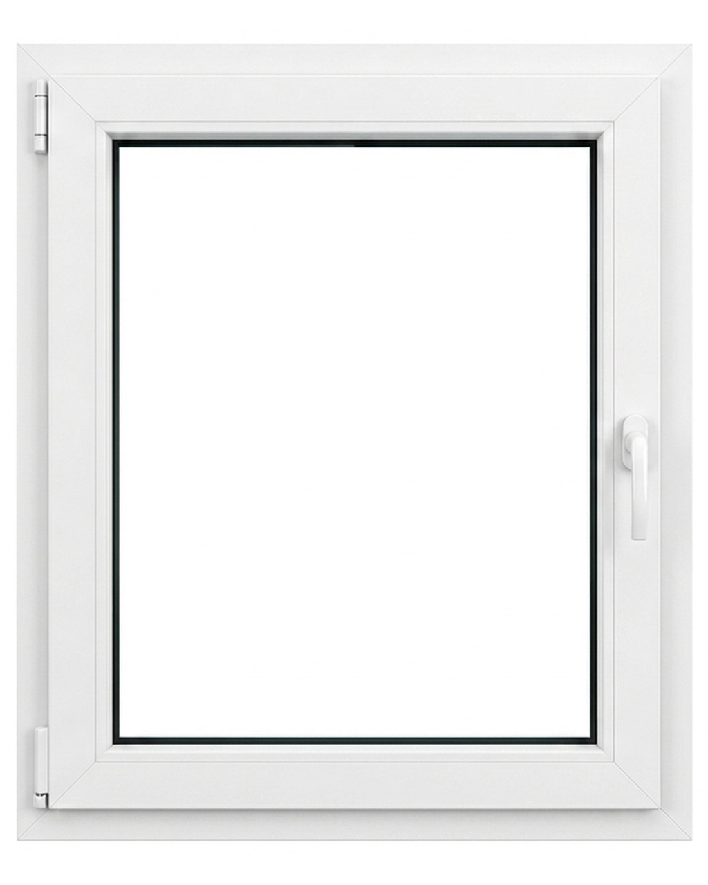

Fenster 3D Konfigurator
1-Flügel Dreh-Kipp
Referenz · Konfigurator-Master

Weiß FX
Ansicht
Innen
Außen
DIN-Anschlag
DIN-Links (Griff rechts)
DIN-Rechts (Griff links)
Weißtöne
Grautöne & Schwarz
Farben
Holzdekore
Verglasung